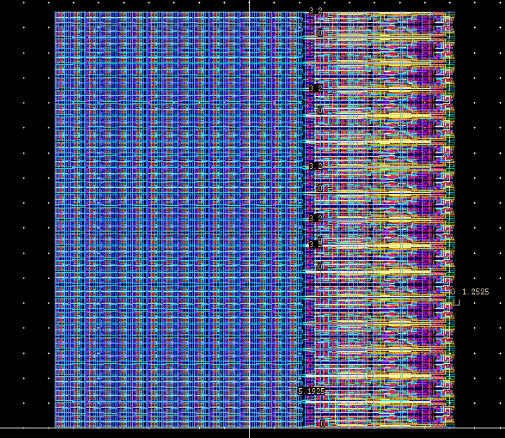
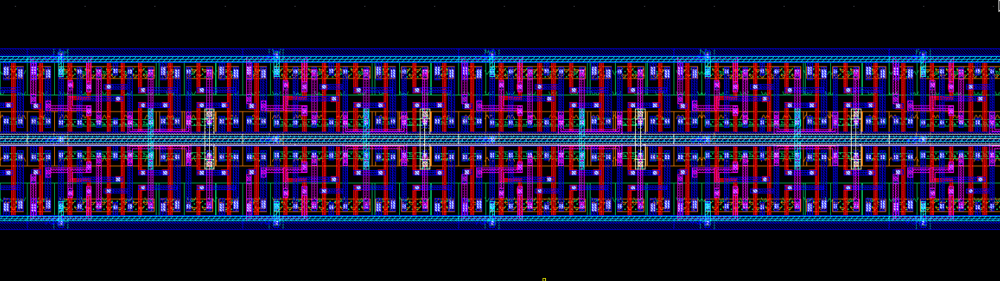

This is a single-cycle RV32I processor that I built at the transistor and layout level in Cadence Virtuoso for ECE 425 (VLSI System Design) at UIUC. The project went from the bottom of the stack up. I first designed a custom standard cell library, then laid out a bit-sliced datapath with it, and finally packaged the library for Cadence Innovus so the controller and full CPU could be automatically placed and routed.

I made a small standard cell library with basic logic gates, a mux, a latch, and a D flip-flop. Every cell has the same height and the same shared power rails and wells, so cells can be placed next to each other in a row. Transistors were sized so each cell's worst-case pull-up and pull-down strength matches a minimum-size NMOS. To keep area down, I merged the source and drain diffusions of series transistors wherever possible. Each cell had to pass DRC, LVS, and functional simulation. The custom cells and the datapath were designed almost entirely in Cadence Virtuoso.
The datapath is bit-sliced. I laid out a single 1-bit slice containing one bit of every component (register file, ALU, comparator, PC, and the muxes between them) and stacked 32 copies of it. This reduces a 32-bit layout problem to a 1-bit one, but every slice has to tile cleanly with its neighbors, and that requirement shaped most of the design. Each slice handles one bit of every signal. For example, the adder in each slice computes its own sum bit and passes the carry to the next slice.
Signals were sorted by where they need to go. Signals every bit needs, like control signals and register selects, run vertically through all 32 slices on the upper metal layers. Signals that pass between bits, like the carry and comparator chains, only connect to adjacent slices.
Since the datapath was also placed and routed by hand, it followed mostly the same design flow as the standard cells.
The register file is the largest structure in the datapath. Instead of a flip-flop per bit, each register bit is a single latch, roughly half the size. It is written while the clock is low and read while the clock is high.
This works because the processor is single-cycle. While the clock is high, the register file
reads both source operands and the ALU computes the result. While the clock is low, the read
outputs hold their values and the result is written into the destination register. Because reads
and writes never overlap, an instruction like addi x1, x1, 1 can't feed its result
back into its own source operand in the middle of a cycle, so storage doesn't need to be edge-triggered,
at least for this design.
The register file is essentially a 32×32 array of latches. Every bitslice is two rows tall, so each slice stores one bit of 16 registers in its top row and one bit of the other 16 in its bottom row. The image below shows these two rows. They are mirrored so they can share a power rail, which saves area.

Testing started from a reference SystemVerilog model of the CPU, with modules for the datapath, the bitslice, and each component, plus a testbench that runs RISC-V assembly programs and compares the results against a golden output. Because the schematic is exported from Virtuoso as a Verilog netlist of transistor switch primitives, any custom block can drop straight into the same testbench in place of its RTL version.
That made it easy to test incrementally. I started by building and testing small pieces (the full adder, register cell, and muxes) with simple testbenches. Then I swapped my extracted netlists in for the reference modules one at a time, first the ALU and register file, then the full bitslice, then the 32-slice datapath, and reran the test programs in VCS after each swap. When a test failed, the bug had to be in the most recently swapped module, and I could compare its waveforms in Verdi against the reference. The final full datapath cell passes DRC/LVS and runs the full test program with output matching the golden result.
The controller was synthesized with Synopsys Design Compiler using my standard cells. I then wrote Innovus scripts to floorplan it, build the power ring and stripes, and place and route it. I placed its pins to line up with where the datapath expects its control signals, which kept the routing short when the two were connected in Virtuoso.